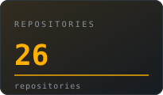
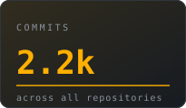
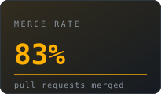
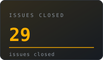
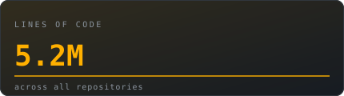
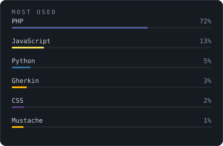

I build software that people can understand.Open source is not a licensing model to me. It is a way of keeping software inspectable, modifiable and owned by the people who run it.
|





Most used |
StackSYSTEMS INFRASTRUCTURE LANGUAGES AI |
Speech should be open. A state-of-the-art open text-to-speech model — from research
to a runnable product, shipped to the public instead of behind an API paywall.
Python · PyTorch · Transformers
One source of truth for reusable agent skills that install globally into both
opencode and Claude Code. Every skill follows the open spec and is validated in CI.
SKILL.md · YAML · CI
A production-grade digital-forensics training lab for Indian cyber cells: raid a
simulated boiler-room, seize devices, capture RAM and disk images, and rebuild the
fraud operation from cross-system evidence. India-specific law throughout.
Linux · Bash · MySQL · Forensics
Meeting-slot booking and attendance check-in for medical representatives across
8 hospitals — built with a FOSS team under Swecha.
Node.js · React